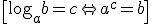
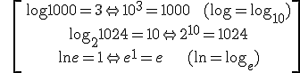
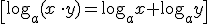
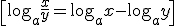
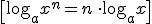
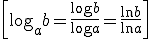
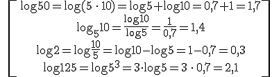
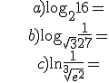
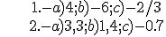

Logaritmos
El logaritmo de un número es el exponente al que hay que elevar un número fijo, llamado base, para que el resultado sea ese número.
El logaritmo de b en base a, si a>0 y a≠1, es:

Ejemplos:

PROPIEDADES:




Ejemplo. Si log 5 ≈ 0,7, calcula log 50, log5 10, log 2 y log 125:

\[\begin{align} & \log 50=\log (5\,\cdot \,10)=\log 5+\log 10=0,7+1=1,7 \\ & {{\log }_{5}}10=\frac{\log 10}{\log 5}=\frac{1}{0,7}=1,4 \\ & \log 2=\log \frac{10}{5}=\log 10-\log 5=1-0,7=0,3 \\ & \log 125=\log {{5}^{3}}=3\cdot \log 5=3\,\cdot \,0,7=2,1 \\ \end{align}\]
Ejercicios
1.- Calcula:

2.- Si log2≈0,3, calcula:
a) log 2000=
b) log 25=
c) log 0,2=
Soluciones:

Obra publicada con Licencia Creative Commons Reconocimiento No comercial Compartir igual 3.0